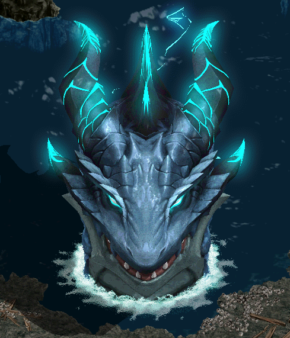
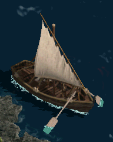
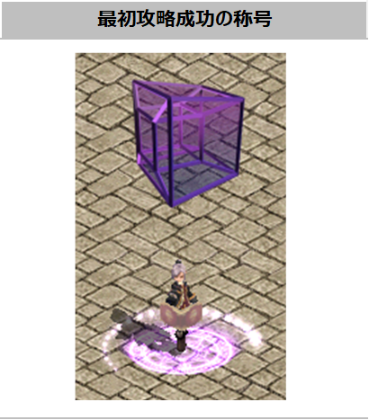

位相征服者ヌケロン攻略

1250レベルから挑戦できる3体目の位相征服者「大海をかき回すヌケロン」の攻略情報です。
「クリペの墓」の入場条件、フィールド制約、報酬、既存の位相征服者との違いをまとめています。
2026年6月25日 (ver 0.0882) 実装
ヌケロン早見表
| 項目 | 内容 |
|---|---|
| 登場フィールド | クリペの墓 |
| 入場条件 | レベル1250以上 / 前提クエスト「異界の神獣」を完了 |
| 難易度 | アバター |
| 入場人数 | 1〜4人 |
| 入場回数 | 週1回クリアを基準として、週1回入場可能 |
| 制限時間 | 30分 |
| 復活制限 | 8回 「復活確率」効果は適用されず、スキルによる復活はプレイヤーごとに1回のみ |
| 主な報酬 | 一定確率でサンダーポイズン、または775〜1250ULTアイテム |
ストーリー
ヌケロンは、本来は異界の海に生息していた巨大な神龍です。フランデル海域「クリペの墓」に大量に眠るRED STONEの力に引き寄せられ、次元を越えてこの世界へ現れました。
明確な勢力や目的を持つ存在ではありませんが、次元移動・次元分割という位相征服者特有の能力と圧倒的な巨体を備えています。
活動するだけでもシュトラセラトとブリッジヘッドを行き来する船舶の脅威となり、RED STONEの影響でさらに強大化する危険もあるため、冒険者協会の討伐対象に指定されました。
クリペの墓 入場方法
| 入場条件 | レベル1250以上 前提クエスト「異界の神獣」を完了 |
|---|---|
| 入場人数 | 1〜4人 |
| 入場回数 | 週1回クリアを基準として、週1回入場可能 |
| 制限時間 | 30分 |
| 復活制限 | 8回 オプション「復活確率」効果は適用されない スキルによる復活はプレイヤーごとに1回のみ |
| 入場NPC | 地下界の大使の所在 (漆黒の城 306,283) の 「ケルトル」 または 「イケル」 ※ メインクエスト2の進行状況によって話しかけるNPCが変わります。 |
| 入場手順 | 入場NPCと会話してヌケロンを選択し、「クリペの墓」へ移動 待機エリア内の「船」をクリックして戦闘フィールドへ移動 |

戦闘フィールドへ移動する船
フィールド情報・デバフ
クリペの墓では、一部の能力値や効果を無効化・減少させるデバフが適用されます。- [回避補正無視]効果の減少
- [命中補正無視]効果の減少
- 思い出の指輪[ソウルガード]使用不可
- HP吸収不可
- 最大CP維持効果使用不可
HP吸収と最大CP維持の両方が使えないため、普段の狩りで吸収やCP固定に頼っている構成ほど準備を変える余地があります。
クリア報酬
ヌケロンをクリアすると、一定確率で「サンダーポイズン」、または775〜1250ULTアイテムを獲得できます。| 報酬 | 獲得方法 |
|---|---|
| サンダーポイズン | ヌケロンクリア時に一定確率で獲得 |
| 775〜1250ULTアイテム | ヌケロンクリア時に一定確率で獲得 |
称号「位相探求者」(初回クリア限定)
位相征服者を初めてクリアしたキャラクターには、名誉称号エフェクト「位相探求者」が付与されます。※ ヒペリオンまたはエルシュカを先にクリア済みの場合、ヌケロンクリア時には支給されません。称号は位相征服者シリーズ全体で1回のみです。

ヒペリオン・エルシュカとの違い
| 項目 | ヒペリオン | エルシュカ | ヌケロン |
|---|---|---|---|
| 登場フィールド | 太陽の関門 | 静寂の星棺 | クリペの墓 |
| 難易度 | アスペクト | アバター | アバター |
| 制限時間 | 30分 | 10分 | 30分 |
| 追加のフィールド制約 | － | 最大CP維持効果使用不可 | HP吸収不可 最大CP維持効果使用不可 |
| 主な報酬 | トレジャーボックス[ヒペリオン] | エルシュカ専用装備 775〜1250ULT |
サンダーポイズン 775〜1250ULT |
3体とも、回避補正無視・命中補正無視効果の減少、ソウルガード使用不可、1〜4人入場、復活8回という基本条件は共通です。
出典: 日本公式「新規位相征服者『ヌケロン』アップデートのご案内」 / 日本公式ゲームガイド「位相征服者」